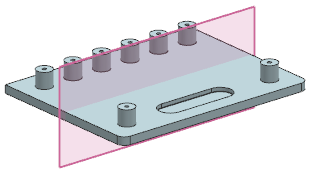

The functionality for mirroring features is improved. You can mirror features that could not be mirrored with the previous Mirror Feature command. These include curve features, datum features, and pattern features created with the Pattern Feature command that was introduced in NX 8.0.
When you mirror one or more features, a single mirror feature is created.

The updated Mirror Feature command includes the following capabilities:
You can mirror existing features except for legacy instance arrays, legacy patterns, and legacy mirror features.
You can specify whether thread features and helix features maintain their original handedness when mirrored.
When the mirrored features include a coordinate system, you must specify which two axes are mirrored. NX derives the third axis to ensure that the coordinate system is right-handed.
The Mirror Feature dialog box is changed to accommodate the enhancements. The pre-NX 8.0.1 Mirror Feature dialog box is available only when you edit a legacy mirror feature.
The Mirror Feature command is useful in the following cases:
When you want features that are symmetrical to other features.
When you want a similar feature at a comparable location on the other side of the mirror plane, but do not need absolute symmetry.
|
Application |
Modeling and Shape Studio |
|
Toolbar |
Feature→Mirror Feature |
|
Menu |
Insert→Associative Copy→Mirror Feature |